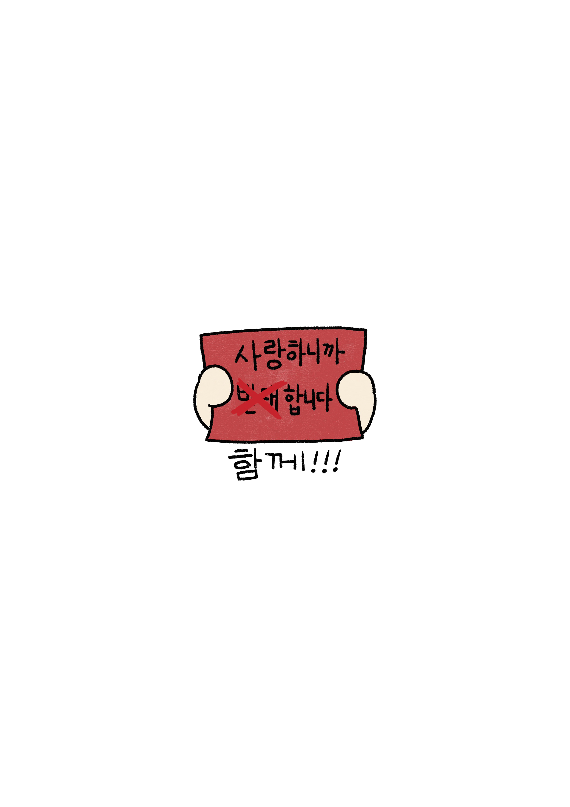
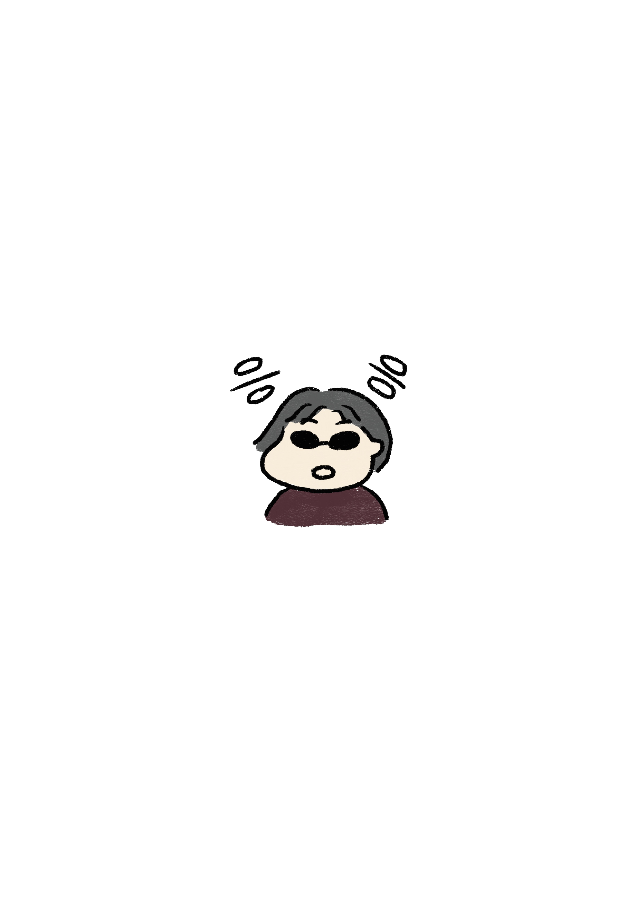

AM 03:10 - AM 05:00
-
부모는 자식을 사랑하는 마음에서...
이런 종류의 말을 들으면서 자식들은 부모를 이해하고 용서해야 하는 것일까.
물론 이 장면만으로 모든 부모와 모든 자녀를 설명이 되는 것은 아니지만
이런 맥락에서 많은 가정폭력 청소년들이 가정 밖으로 나오지 못하고 있다고
생각한다. ‘어떻게 엄마인데 신고를 해’, ‘아빠인데’, ‘오빠인데..’ “나 때문에
힘들었잖아” 하는 죄책감이 자립을 방해하고 있다.
물론 집을 나오는 게 청소년에게 안전한 대안이 되지 않는다는 걸 안다.
맞다, 사실 이렇게 생각하여 용기 내서 거리에 나오라고 할 수가 없다. 거리는
청소년들에게 결코 호의적이지 않으니까. 청소년들이 미숙하고 능력이 없어서가 아니다. 그런 시행착오를 거쳐 능력치를 올릴 기회조차 주어지지 않는다.
특히나 가출 청소년이라는 꼬리표가 붙으면 비행청소년을 보는 색안경 시선이
많다. 나는 많은 사람들이 알아차렸으면 좋겠다. 가족이라고 무조건 사이가
좋아야 하진 않으며 모든 사람에게 집이 편안하고 안전한 곳이지 않을 수 있다고.
누군가에게 집은 위험이 즐비한 길거리 보다 더 안전하지 않을 수 있다고.
피해 청소년들이 ‘화목한 가정’이라는 이데올로기에 갇히지 않을 수 있도록
사람들의 의식 변화와 환경이 갖춰져야 한다.
나 또한 가족과 관계가 매끄럽지 못하다. 그로인해 나에게도 집이라는 공간이
안정감을 주진 못한다. 성인인 나에게도 가족 관계는 어떤 명제가 어울리는지
알 수 없을 정도로 복잡하고 까다롭다. 그래서 더욱 어렵다. 난 성경의 말처럼
무조건 부모를 공경할 수는 없었다. 물론 최소한의 구성원으로써 가족의 원만한
관계를 독려하고 싶다. 단 부모와 자식, 나이, 성별로 인해 생기는 위계와
권력 관계를 막고 싶다.
‘가족이니까 어쩔 수 없지‘가 아닐 수 있도록 다른 관계와 똑같이 동등한 위치에서
존중을 해야 하고, 사회의 여느 관계처럼 잘못을 잘못이라 말하고 해결되지 못하는
문제가 있다면 관계를 끊을 수 있어야 한다. 낳아주고 길러준 것 만으로 감사해야
한다는 말은 없었으면 좋겠다. 누군가에겐 선택하지 못했던 가정에서 낳아지고
길러진 것이 그리 반가운 일이 아닐 수도 있으니 말이다.

